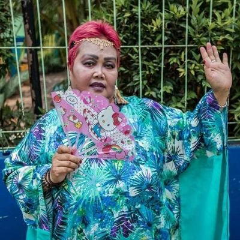

#PajakUntukKita
@DitjenPajakRI
2h
Apa sih hal-hal terkait perpajakan yang dibahas dalam #AM2018Bali ?
Berikut ini ulasannya.
http://www.pajak.go.id/news/imf-2018-nazara-dan-sobagjo-tekankan-pentingnya-pajak-yang-adil-dan-tranparan …
Berikut ini ulasannya.
http://www.pajak.go.id/news/imf-2018-nazara-dan-sobagjo-tekankan-pentingnya-pajak-yang-adil-dan-tranparan …

JNE Customer Care
@JNECare
3h
Hai malam kak, admin cek no resi tsb paket sdh diterima a.n Johan / keluarga pada tgl 11 Oktober ‘18 jam 13:27, mohon dipastikan dahulu ya kak, jika masih ada kendala silahkan konfirmasi kembali. Trims. ^Denis

Bidadari
@BudeSumiyati
1m
Udah mandi pake sunlight masih tetap berlemak.